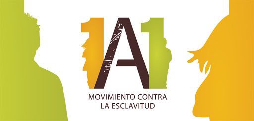

CAMPAÑAS
Estas campañas tienen como objetivo el visualizar, concientizar y prevenir el delito de Trata de Personas y están dirigidas a diferentes esferas de la sociedad.
1-Campaña Corazón Azul (UNODC).- Su objetivo es la sensibilización, participación masiva para encontrar medidas que contribuyan a finalizar el delito y que las personas se muestren solidarias con las víctimas portando la insignia del “corazón azul”.

2-Campaña Nacional Contra la Trata de Personas en Lenguas Indígenas Nacionales.- La Comisión Nacional de los Derechos Humanos (CNDH) en coordinación con el Instituto Nacional de Lenguas Indígenas (INALI) y DICONSA en Yucatán, inicia labores de capacitación y prevención del delito. La primera etapa de la cruzada consta de un spot, audio y carteles traducidos a 10 lenguas autóctonas, entre ellas maya, mixe, mixteca, náhuatl, otomí, purépecha y tzeltal.

3-Campaña Tu Voz Contra la Trata: Tu Voz Contra la Trata se deriva de la Alianza contra la trata de personas en México, la cual incluye los aliados como: MTV Latinoamérica, Fundación Telefónica, Fundación Cinépolis, Fundación Panamericana para el Desarrollo (PADF), Comisión Nacional de Derechos Humanos (CNDH), la Secretaría de Comunicaciones y Transportes (SCT) y el Colectivo contra la Trata de Personas. Tanto el documental, como la campaña tienen como objetivos aumentar la conciencia sobre los riesgos de la trata de personas, medir el conocimiento de los jóvenes sobre el tema, involucrar a los jóvenes mediante la educación y llamar a la acción para prevenir futuros casos, como también proporcionarles nuevas oportunidades de comunicación a través de las redes sociales.

4-Campaña 1 a 1: Movimiento contra la esclavitud de CBN Latino, Orphans Promise y Operación Bendición Latinoamérica junto a otras organizaciones como la Unicef, CNDH en la lucha contra la trata de personas y la esclavitud Infantil. Dirigido a adolescente de 11 a 18 años en México a través de dos documentales “Volviendo” y “Esclavos Invisibles”.

Regresar